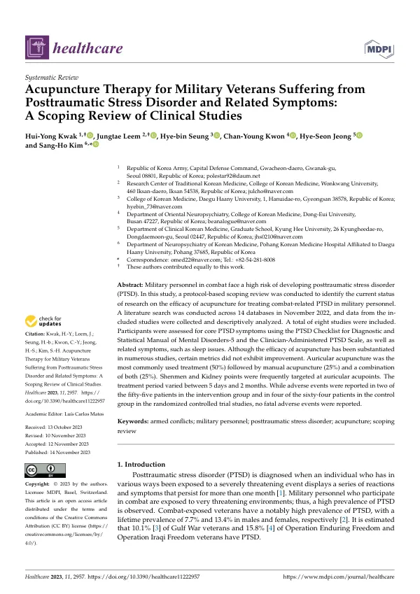

Acupuncture Therapy for Military Veterans Suffering from Posttraumatic Stress Disorder and Related Symptoms: A Scoping Review of Clinical Studies
Kwak HY, Leem J, Seung Hb, Kwon CY, Jeong HS, Kim SH
Healthcare 11(22):2957

첫 장 · 오픈액세스First page · open access
논문 소개Summary
전투에 참여한 군인은 극도로 위협적인 환경에 놓이므로 외상후스트레스장애의 유병률이 높습니다. 참전군인의 평생 유병률은 남성 7.7%, 여성 13.4%로 보고되며, 걸프전 참전군인의 10.1%, 이라크·아프가니스탄 작전 참전군인의 15.8%가 이 진단을 받은 것으로 추정됩니다. 제대 뒤 사회 복귀와 직업 문제가 겹치고 우울, 음주 문제, 가족 관계의 어려움이 함께 옵니다. 침이 보완적 치료로 검토돼 왔지만 이 집단을 대상으로 한 연구가 어디까지 와 있는지 정리된 적이 없었습니다.
데이터베이스 14곳을 2022년 11월에 검색해 주제범위 문헌고찰의 절차대로 자료를 모으고 서술적으로 분석했습니다. 이 고찰의 연구계획서는 INT-65이고, 지진 생존자를 대상으로 한 같은 형식의 고찰이 INT-66입니다.
8편이 포함됐습니다. 외상후스트레스장애의 핵심 증상은 DSM-5용 PTSD 체크리스트와 임상가용 PTSD 척도로 평가했고 수면 문제 같은 동반 증상도 함께 보았습니다. 가장 많이 쓴 것은 이침으로 절반(50%)이었고 수기침이 25%, 두 가지를 함께 쓴 경우가 25%였습니다. 이혈 가운데는 신문과 신 자리가 자주 선택됐습니다. 치료 기간은 5일에서 2개월까지 넓게 걸쳐 있었습니다.
효과는 여러 연구에서 확인됐지만 모든 지표가 좋아진 것은 아닙니다. 일부 지표는 개선을 보이지 않았고 이 점은 그대로 적혀 있습니다. 안전성은 무작위배정 연구에서 확인할 수 있었는데, 중재군 55명 가운데 2명, 대조군 64명 가운데 4명에서 이상반응이 보고됐고 치명적인 사건은 없었습니다.
이 고찰이 보여 주는 것은 효과의 크기가 아니라 연구의 상태입니다. 8편은 결론을 내리기에 적은 수이고 치료 기간이 5일부터 2개월까지 벌어져 있다는 것은 표준화된 프로토콜이 아직 없다는 뜻입니다. 이침이 절반을 차지한 것은 이 분야 연구가 어떤 조건에서 이루어져 왔는지를 보여 주는 사실로 기록해 둘 만합니다. 앞으로의 연구는 평가 도구와 치료 기간을 맞추고 이상반응을 빠짐없이 보고해야 합니다.
Military personnel in combat are exposed to severely threatening environments, and the prevalence of post-traumatic stress disorder among them is high. Lifetime prevalence among combat-exposed veterans has been reported as 7.7% in men and 13.4% in women, with an estimated 10.1% of Gulf War veterans and 15.8% of Operation Enduring Freedom and Operation Iraqi Freedom veterans affected. Reintegration and occupational difficulties compound the condition, alongside depression, increased alcohol use and strained family relationships. Acupuncture has been considered as a complementary option, but no account existed of how far research in this population had come.
Fourteen databases were searched in November 2022, and data were collected and descriptively analysed following scoping review procedures. The protocol for this review is INT-65, and a companion review of earthquake survivors is INT-66.
Eight studies were included. Core symptoms were assessed with the PTSD Checklist for DSM-5 and the Clinician-Administered PTSD Scale, alongside related symptoms such as sleep problems. Auricular acupuncture was the most common approach at half of the studies (50%), followed by manual acupuncture (25%) and a combination of both (25%). Shenmen and Kidney were the auricular points most often selected. Treatment periods ranged widely, from five days to two months.
Efficacy was substantiated in a number of studies, but not every measure improved; some metrics showed no change, and this is stated plainly. Safety could be examined in the randomised trials, where adverse events were reported in two of 55 patients in the intervention groups and four of 64 in the control groups, with no fatal events.
What this review shows is the state of the research rather than the size of an effect. Eight studies are too few for conclusions, and treatment periods spanning five days to two months indicate that no standardised protocol yet exists. That auricular acupuncture accounts for half the studies is worth recording as a fact about how this research has been conducted. Future work should align assessment tools and treatment duration and report adverse events completely.
인용Cite
Kwak HY, Leem J, Seung Hb, Kwon CY, Jeong HS, Kim SH. Acupuncture Therapy for Military Veterans Suffering from Posttraumatic Stress Disorder and Related Symptoms: A Scoping Review of Clinical Studies. Healthcare. 2023;11(22):2957. doi:10.3390/healthcare11222957